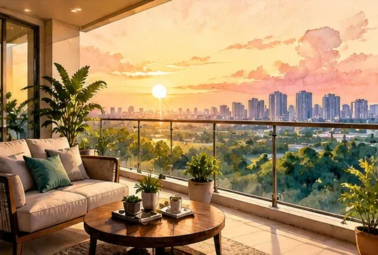

How to Evaluate a Residential Project Before Buying a Property in India
A step-by-step way to check location, RERA status, total cost, the developer and construction progress before you commit.
Read more about How to Evaluate a Residential Project Before Buying a Property in India →